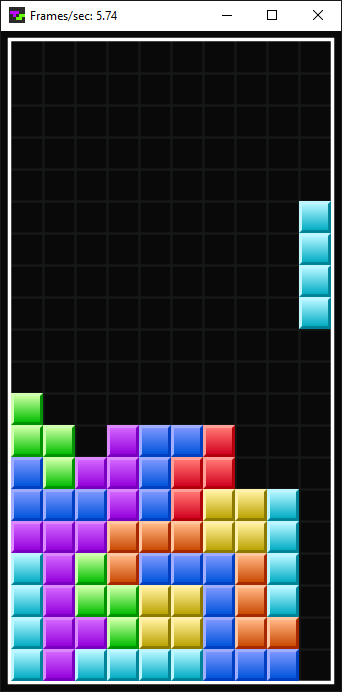

{kind=link}
© 2023 meatfighter.com
This work is licensed under CC BY-SA 4.0


Contents > General-purpose Computer
The following program is designed to demonstrate the capabilities of the general-purpose computer. It is a bare-bones implementation of Tetris written in the assembly language detailed in the previous section.
The program begins by defining constants:
define FALL_SPEED 01 define MODE_ATTRACT 00 define MODE_PLAY 01 define MODE_CLEAR_LINES 02 define ACTION_DRAW 22 ; BNE define ACTION_TEST 23 ; BEQ define CELL_EMPTY 00 define CELL_SOLID FF ; Any nonzero cell is solid define PLAYFIELD_WIDTH 0B define SPAWN_X 05 define SPAWN_Y 02 define SPAWN_ROTATION 00
FALL_SPEED is the number of frames between gravity drops. While generating a frame, the program decrements the fall timer by one if it is nonzero. Otherwise, the program resets the fall timer to FALL_SPEED, and it executes a gravity drop. Since the frame rate is approximately 5.75 frames/sec, a FALL_SPEED of 01 translates to a gravity drop about every 350 milliseconds, a rate similar to level 5 in NES Tetris.
The program switches between the modes defined on lines 3–5. MODE_ATTRACT is a very basic attract mode that simply keeps the last top out displayed, or an empty playfield in the case of startup. It is unresponsive to controls except for the Start button, which causes the program to clear the playfield and to transition to MODE_PLAY. As its name suggests, MODE_PLAY is the mode where the player interacts with the falling pieces. When a piece locks into the pile, the program temporarily changes to MODE_CLEAR_LINES, during which it scans for and removes lines.
The program declares a single subroutine called drawOrTestTetromino that performs the actions defined on lines 7 and 8. ACTION_DRAW directs drawOrTestTetromino to paint four playfield cells corresponding to the blocks of a named tetromino, at a specified location and orientation, in a prescribed color. ACTION_TEST directs drawOrTestTetromino to verify that four playfield cells corresponding to the blocks of a named tetromino, at a specified location and orientation, are all empty. It enables the program to determine if a requested move is a valid move.
Since the computer does not provide a call stack, drawOrTestTetromino receives the tetromino type, coordinates, and orientation via global variables, and the action and the color via self-modifying code. Regarding the latter, the program overwrites instructions with the action constants (the opcodes for BNE and BEQ).
The remaining constants relate to the playfield. As revealed below, the playfield is a matrix with 23 rows and 11 columns (PLAYFIELD_WIDTH). Each byte contains the state of an individual cell. 00 (CELL_EMPTY) means the cell is empty. Any other value represents the color of a solid cell.
segment 0000 playfield: ; 0 1 2 3 4 5 6 7 8 9 10 00 00 00 00 00 00 00 00 00 00 FF ; 0 00 00 00 00 00 00 00 00 00 00 FF ; 1 00 00 00 00 00 00 00 00 00 00 FF ; 2 00 00 00 00 00 00 00 00 00 00 FF ; 3 00 00 00 00 00 00 00 00 00 00 FF ; 4 00 00 00 00 00 00 00 00 00 00 FF ; 5 00 00 00 00 00 00 00 00 00 00 FF ; 6 00 00 00 00 00 00 00 00 00 00 FF ; 7 00 00 00 00 00 00 00 00 00 00 FF ; 8 00 00 00 00 00 00 00 00 00 00 FF ; 9 00 00 00 00 00 00 00 00 00 00 FF ; 10 00 00 00 00 00 00 00 00 00 00 FF ; 11 00 00 00 00 00 00 00 00 00 00 FF ; 12 00 00 00 00 00 00 00 00 00 00 FF ; 13 00 00 00 00 00 00 00 00 00 00 FF ; 14 00 00 00 00 00 00 00 00 00 00 FF ; 15 00 00 00 00 00 00 00 00 00 00 FF ; 16 00 00 00 00 00 00 00 00 00 00 FF ; 17 00 00 00 00 00 00 00 00 00 00 FF ; 18 00 00 00 00 00 00 00 00 00 00 FF ; 19 00 00 00 00 00 00 00 00 00 00 FF ; 20 00 00 00 00 00 00 00 00 00 00 FF ; 21 FF FF FF FF FF FF FF FF FF FF 00 ; 22
The green rectangular region is the visible playfield. It spans rows 2–21 and columns 0–9. tetrominoes spawn in the middle of its ceiling, centered at row 2 (SPAWN_Y) and column 5 (SPAWN_X).
Rows 0–1 constitute the vanish zone, the area above the ceiling that falling tetrominoes can rotate and even lock into. The initial rotation index, SPAWN_ROTATION, ensures none of the blocks of newly spawned tetrominoes start out in the vanish zone.
Row 22 and column 10 consist entirely of solid cells (CELL_SOLID), except for the element in the lower-right corner. Row 22 acts as the floor. Column 10 serves as both the left wall and the right wall since the matrix, like all data regions, is a one-dimensional array, and each of its row wraps into the next.
When a tetromino locks into the pile, the program scans four rows about the tetromino's center for lines. The scan ignores the visible playfield boundaries for performance and code simplicity. To prevent row 22 from inadvertently registering as a line, its rightmost element is an empty cell, and the program scans for lines of eleven solid cells, rather than ten. The eleven-solids check works on the visible rows due the solid elements of column 10.
To clear a line, the program shifts all rows above the line downward. To achieve that, the program overwrites each row with a copy of the preceding row. Since row 0 has no preceding row, the program fills it with ten empty cells followed by a solid cell.
At the start of a new game, the program resets the playfield to the state in the listing above.
The segment directive on line 19 is superfluous because no instructions or data appear before the playfield. But the directive makes it clear the playfield is located at the beginning of RAM. I.e., the label playfield resolves to address 0000.
At 23 × 11 = 253 bytes, the playfield fits in the first 256-byte page of memory with three bytes to spare. That enables the program to address a cell at (row,col) with code equivalent to:
M = 0; // page zero N = 11 * row + col; // offset within page zero
The computer is connected to an external peripheral device, a window that serves as a proxy for the player’s physical monitor and keyboard. It presents a graphical representation of the visible playfield:

The lower-three bits of each visible playfield byte determine the color of each cell per the following mapping.
| Value | tetromino | Color |
|---|---|---|
| 000 | (empty) | Black |
| 001 | T | Purple |
| 010 | J | Blue |
| 011 | Z | Red |
| 100 | O | Yellow |
| 101 | S | Green |
| 110 | L | Orange |
| 111 | I | Cyan |
The computer and the window communicate via memory-mapped I/O. After the program updates the visible playfield in RAM, it writes 01 to 00FD, the drawFrame flag in the listing below.
segment 00FD drawFrame: 00 ; 00 = generating frame; otherwise, finished generating frame leftButton: 00 ; 00 = released; otherwise, pressed rightButton: 00 ; 00 = released; otherwise, pressed
The window polls that location. When it reads a nonzero value, it copies the visible playfield from RAM to an array that backs the displayed image. Then, for each keyboard key that controls the game, the window writes the key's status—either 00 for released or 01 for pressed—to a key-specific address. Finally, it resets drawFrame to 00.
The window writes the statuses of the left and right arrow keys in leftButton and rightButton, respectively, the last-two bytes of memory page zero. The remaining keyboard key addresses appear later in the code because the tetrominoes table is aligned with the start of page one:
segment 0100 tetrominoes: ; 0 1 2 3 FF 00 01 0B ; 0 0 td { -1, 0, 1, 11 } F5 FF 00 0B ; 0 1 tl { -11, -1, 0, 11 } FF 00 01 F5 ; 0 2 tu { -1, 0, 1, -11 } F5 00 01 0B ; 0 3 tr { -11, 0, 1, 11 } FF 00 01 0C ; 1 0 jd { -1, 0, 1, 12 } F5 00 0A 0B ; 1 1 jl { -11, 0, 10, 11 } F4 FF 00 01 ; 1 2 ju { -12, -1, 0, 1 } F5 F6 00 0B ; 1 3 jr { -11, -10, 0, 11 } FF 00 0B 0C ; 2 0 zh { -1, 0, 11, 12 } F6 00 01 0B ; 2 1 zv { -10, 0, 1, 11 } FF 00 0B 0C ; 2 2 zh { -1, 0, 11, 12 } F6 00 01 0B ; 2 3 zv { -10, 0, 1, 11 } FF 00 0A 0B ; 3 0 o { -1, 0, 10, 11 } FF 00 0A 0B ; 3 1 o { -1, 0, 10, 11 } FF 00 0A 0B ; 3 2 o { -1, 0, 10, 11 } FF 00 0A 0B ; 3 3 o { -1, 0, 10, 11 } 00 01 0A 0B ; 4 0 sh { 0, 1, 10, 11 } F5 00 01 0C ; 4 1 sv { -11, 0, 1, 12 } 00 01 0A 0B ; 4 2 sh { 0, 1, 10, 11 } F5 00 01 0C ; 4 3 sv { -11, 0, 1, 12 } FF 00 01 0A ; 5 0 ld { -1, 0, 1, 10 } F4 F5 00 0B ; 5 1 ll { -12, -11, 0, 11 } F6 FF 00 01 ; 5 2 lu { -10, -1, 0, 1 } F5 00 0B 0C ; 5 3 lr { -11, 0, 11, 12 } FE FF 00 01 ; 6 0 ih { -2, -1, 0, 1 } EA F5 00 0B ; 6 1 iv { -22, -11, 0, 11 } FE FF 00 01 ; 6 2 ih { -2, -1, 0, 1 } EA F5 00 0B ; 6 3 iv { -22, -11, 0, 11 }
Each row of the tetrominoes table contains the coordinates of four blocks of a rotated tetromino encoded as signed offsets relative to the tetromino’s center. Since the playfield is a one-dimensional data region representing a two-dimensional matrix of width eleven, the signed offset of a block at (x,y) is 11 * y + x.
The program addresses each table element with code equivalent to:
M = 1; // page one N = 16 * tetrominoType + 4 * tetrominoRotation + blockIndex; // offset within page one
The orientation of the falling tetromino, tetrominoRotation, is in the range [0,3] regardless of the tetromino type, tetrominoType, because the orientations of the Z-, S-, and I-tetrominoes appear twice, and the orientation of the O-tetromino appears four times:
Above, the leftmost column comprises the spawn orientations, the way the pieces initially appear. And the steps of clockwise rotation span left-to-right across each row. This is the same way pieces rotate in NES Tetris.
The window writes the remaining keyboard key statuses to bytes immediately following the tetrominoes table.
segment 0170 startButton: 00 ; 00 = released; otherwise, pressed ccwRotateButton: 00 ; 00 = released; otherwise, pressed cwRotateButton: 00 ; 00 = released; otherwise, pressed downButton: 00 ; 00 = released; otherwise, pressed
ccw and cw are abbreviations for “counterclockwise” and “clockwise”, respectively.
Here is the full key mapping:
| Status Variable | Key |
|---|---|
| startButton | Enter |
| leftButton | ← |
| rightButton | → |
| downButton | ↓ |
| ccwRotateButton | Z |
| cwRotateButton | X |
Next, the program declares the game state variables:
tetrominoType: 00 ; 00--06 (T, J, Z, O, S, L, I) tetrominoRotation: 00 ; 00--03 tetrominoX: 00 ; 00--09 tetrominoY: 00 ; 02--15 lastRotation: 00 ; 00--03 lastX: 00 ; 00--09 frameCounter: 00 ; 00--FF (wraps around) seedHigh: 89 ; randomizer seedLow: 88 nextBit: 00 i: 00 ; loops index origin: 00 ; playfield index corresponding to tetromino center tetrominoesIndex: 00 ; tetrominoes table index corresponding to a tetromino block fallTimer: 00 ; 00 = drop tetromino mode: 00 ; 00 = attract, 01 = play, 02 = clear lines minY: 00 ; minimal locked tetromino Y (00--16)
The variables on lines 95–98 describe the falling tetromino. Prior to servicing a move request, the program backs up the tetromino's orientation and x-coordinate in the variables on lines 100–101. If the program discovers the request is invalid, then it restores the original values from the backups.
When a tetromino spawns, the program updates the 16-bit value spread across seedHigh and seedLow by it passing through a randomization function. The frameCounter—a variable the program increments at the start of each frame—influences the randomization function. It provides a source of entropy based on the timing of the player's actions. The program stores the function's single-bit output in nextBit.
The code comments describe the rest of the variables, though minY deserves extra explanation. minY stores the row index of the highest tetromino on the pile. The program uses it to improved the performance of clearing lines. Specifically, the program does not shift the empty rows above the highest tetromino because empty space looks the same shifted or not.
That completes the data region. The rest of the program consists of instructions, beginning with its entry point:
main: ; ------------------------------------------------------------------------------------------------------ SMN drawFrame SEA 01 STA ; render frame SMN frameCounter LDA INC STA ; ++frameCounter; SMN mode LDB SEA MODE_PLAY SUB ; if (mode == MODE_PLAY) { BEQ playing ; goto playing; ; } SEA MODE_CLEAR_LINES SUB ; if (mode == MODE_CLEAR_LINES) { BEQ clearLines ; goto clearLines; ; } SMN startButton LDA ; if (startButton == 0) { BEQ main; ; goto main; ; }
The program signals the window to display the current playfield state by writing 01 to drawFrame. It does not wait for the window to write 00 back to drawFrame because the window runs at blistering speed compared to the program.
The program increments the frameCounter by one.
In play mode and clear lines mode, the program jumps to respective handlers. Otherwise, the program is in attract mode, where it monitors the Start button's status. If the button is released, the program loops back to the entry point. Else it continues to:
SMN minY ; // Start button pressed SEA 16 STA ; minY = 22; SEA F1 ; A = 0xF1; // 22 * PLAYFIELD_WIDTH - 1, index of last element of row 21 SEB CELL_EMPTY SMN playfield clearLoop: TAN STB ; playfield[A] = CELL_EMPTY; DEC ; if (--A != 0) { BNE clearLoop ; goto clearLoop; ; } STB ; playfield[0] = CELL_EMPTY; SMN 00F1 ; MN = 0x00F1; // 22 * PLAYFIELD_WIDTH - 1, address of last element of row 21 SEB CELL_SOLID edgeLoop: STB ; *MN = CELL_SOLID; TNA SEB PLAYFIELD_WIDTH SUB TAN ; MN -= PLAYFIELD_WIDTH; SEB FF SUB ; if (*MN != -1) { BNE edgeLoop ; goto edgeLoop; ; }
The program resets minY to the floor index, it clears rows 0–21, and it resolidifies column 10. Then the program spawns the first tetromino of the game:
spawn: SMN mode SEA MODE_PLAY STA ; mode = MODE_PLAY; SMN tetrominoRotation SEA SPAWN_ROTATION STA ; tetrominoRotation = SPAWN_ROTATION; SMN tetrominoX SEA SPAWN_X STA ; tetrominoX = SPAWN_X; SMN tetrominoY SEA SPAWN_Y STA ; tetrominoY = SPAWN_Y; SMN fallTimer SEA FALL_SPEED STA ; fallTimer = FALL_SPEED;
The program finally changes to play mode. It happens here, rather than earlier, because this spawn code also executes at the end of clear lines mode to resume play mode.
The program positions and orients the tetromino at the spawn point, and it resets the fallTimer to the maximum value to prevent the tetromino from gravity dropping immediately after spawning.
Next, the program randomly chooses the tetromino type:
randomlyChoose: SEB 02 SMN seedLow LDA AND SMN nextBit STA SMN seedHigh LDA AND SMN nextBit LDB XOR BEQ bit9Clear SEA 80 bit9Clear: STA ; nextBit = ((seedHigh & 0x02) ^ (seedLow & 0x02)) << 6; SMN seedHigh LDA SEB 01 AND BEQ bit8Clear SEB 80 bit8Clear: SMN seedLow LDA RS1 OR STA ; seedLow = (seedHigh << 7) | (seedLow >>> 1); SMN nextBit LDB SMN seedHigh LDA RS1 OR STA ; seedHigh = nextBit | (seedHigh >>> 1); SMN frameCounter LDB XOR SEB 1F AND TAB LS3 SUB RS5 TAB ; B = ((seedHigh ^ frameCounter) & 0x1F) * 7 / 32; SMN tetrominoType LDA SUB ; if (B == tetrominoType) { BEQ randomlyChoose ; goto randomlyChoose; ; } STB ; tetrominoType = B;
The program employs the same Fibonacci linear-feedback shift register (LFSR) at the core of the pseudorandom number generator in NES Tetris. As shown below, the program generates the next random bit, nextBit, by XORing bit-1s of seedHigh and seedLow.
seedHigh and seedLow collectively operate as a 16-bit register. The program logical right shifts it, discarding the lowest bit, and shifting-in nextBit.
The program initializes seedHigh and seedLow to 89 and 88, respectively, the same arbitrary quantities used in NES Tetris.
The LFSR generates a sequence of 32,767 unique values before cycling, one less-than half the numbers that fit in a 16-bit register. To prevent that deterministic sequence from producing a constant tetromino order, the program bases its selection on seedHigh XORed with the frameCounter. Since the program increments the frameCounter at the beginning of every frame, even during attract mode, the XOR makes the tetromino order dependent on when the player hits the Start button. The number of frames between spawns also affects the order. And the player’s inputs influence that number.
The program reduces the XORed value to the range [ 0, 6 ] because there are seven tetrominoes. Since the computer does not provide a modulo instruction, the program performs the reduction with the following formula, where v is the lower-five bits of the XORed value.
7 * v / 32
Since v ∈ [ 0, 31 ], the formula multiplies 7 by a fraction less-than 1.0, producing a value in the correct range when floored.
The program employs a transformed version of the formula:
= (8 * v - v) / 32 = ((v << 3) - v) / 32 = ((v << 3) - v) >>> 5
If the randomly chosen tetromino is the same as the last one, the program picks again. That simple strategy does not prevent alternating duplicate pieces. Nor does it inhibit droughts.
Next, the program verifies the tetromino spawned into empty space by invoking drawOrTestTetromino:
SMN drawOrTest SEA ACTION_TEST STA ; drawOrTest = ACTION_TEST; JSR drawOrTestTetromino ; if (drawOrTestTetromino()) { // verify tetromino spawned into empty space BEQ keepPosition ; goto playing; ; } SMN mode ; // Bad tetromino position. It's game over. SEA MODE_ATTRACT STA ; mode = MODE_ATTRACT; JMP endFall ; goto endFall; // draws the tetromino that failed to spawn
Based on the action constant stored to drawOrTest, drawOrTestTetromino either paints or examine the four playfield cells corresponding to the blocks of the falling tetromino. But unlike the inputs that describe the falling tetromino—tetrominoType, tetrominoRotation, tetrominoX, and tetrominoY—drawOrTest is not a global variable. It is a label that resolves to the address an instruction inside of drawOrTestTetromino. When the program “assigns” drawOrTest, it modifies its own code.
ACTION_TEST causes drawOrTestTetromino to set the zero flag iff all four examined cells are empty. If they are, the program jumps to the play handler below. Otherwise, a top out occurred. In that case, the program switches to attract mode, and it jumps to endFall. There, the program draws the tetromino at the invalid location, overlaid on solid blocks, to provide a visual indication of spawn failure. Then the program loops back to the beginning, where it waits for player to press the Start button once again.
playing: ; // Play handler SMN drawOrTest SEA ACTION_DRAW STA ; drawOrTest = ACTION_DRAW; SMN drawCell+1 SEA CELL_EMPTY STA ; *(drawCell+1) = CELL_EMPTY; JSR drawOrTestTetromino ; drawOrTestTetromino(); // erase tetromino SMN tetrominoRotation LDA SMN lastRotation STA ; lastRotation = tetrominoRotation; SMN tetrominoX LDA SMN lastX STA ; lastX = tetrominoX; SMN leftButton LDA ; if (leftButton == 0) { BEQ testRightButton ; goto testRightButton; ; } SMN tetrominoX ; // Left button pressed LDA DEC STA ; --tetrominoX; JMP testCcwRotateButton ; goto testCcwRotateButton; testRightButton: SMN rightButton LDA ; if (rightButton == 0) { BEQ testCcwRotateButton ; goto testCcwRotateButton; ; } SMN tetrominoX ; // Right button pressed LDA INC STA ; ++tetrominoX; testCcwRotateButton: SEB 03 ; B = 3; SMN ccwRotateButton LDA ; if (ccwRotateButton == 0) { BEQ testCwRotateButton ; goto testCwRotateButton; ; } SMN tetrominoRotation ; // CCW button pressed LDA DEC AND STA ; tetrominoRotation = (tetrominoRotation - 1) & 3; JMP validatePosition ; goto validatePosition; testCwRotateButton: SMN cwRotateButton LDA ; if (cwRotateButton == 0) { BEQ validatePosition ; goto validatePosition; ; } SMN tetrominoRotation ; // CW button pressed LDA INC AND STA ; tetrominoRotation = (tetrominoRotation + 1) & 3; validatePosition: SMN drawOrTest SEA ACTION_TEST STA ; drawOrTest = ACTION_TEST; JSR drawOrTestTetromino ; if (drawOrTestTetromino()) { // verify tetromino shifted/rotated into empty space BEQ keepPosition ; goto keepPosition; ; } SMN lastRotation ; // Bad tetromino position. Undo shift or rotation. LDA SMN tetrominoRotation STA ; tetrominoRotation = lastRotation; SMN lastX LDA SMN tetrominoX STA ; tetrominoX = lastX;
The play handler calls drawOrTestTetromino to paint the falling tetromino with empty cells, erasing it from the playfield. In another example of self-modifying code, the handler stores the paint value, CELL_EMPTY, to drawCell+1, the address of an instruction operand in drawOrTestTetromino.
The handler backs up the orientation and the x-coordinate of the falling tetromino.
If the Left button is pressed, the handler decrements the x-coordinate by one. Otherwise, if the Right button is pressed, the handler increments the x-coordinate by one.
If the Counterclockwise Rotation button is pressed, the handler decrements the orientation by one, such that zero wraps to three. Otherwise, if the Clockwise Rotation button is pressed, the handler increments the orientation by one, such that three wraps to zero.
The handler verifies the manipulated tetromino is fully within empty space by calling drawOrTestTetromino. If it is not, the handler restores the original orientation and x-coordinate from the backups.
Next, the handler deals with drops:
keepPosition: SMN downButton LDA SMN fallTimer ; if (downButton == 0) { BEQ updateFallTimer ; goto updateFallTimer; ; } SEA 00 ; // Down button pressed STA ; fallTimer = 0; updateFallTimer: LDA ; if (fallTimer != 0) { BNE decFallTimer ; goto decFallTimer; SEA FALL_SPEED ; } STA ; fallTimer = FALL_SPEED; SMN tetrominoY ; // Drop tetromino LDA INC STA ; ++tetrominoY; JSR drawOrTestTetromino ; if (drawOrTestTetromino()) { // verify tetromino dropped into empty space BEQ endFall ; goto endFall; ; } SMN tetrominoY ; // Bad tetromino position. Undo drop and lock tetromino in place. LDA DEC STA ; --tetrominoY; TAB SMN minY LDA SUB BMI keepMinY STB ; minY = min(minY, tetrominoY); keepMinY: SMN mode SEA MODE_CLEAR_LINES STA ; mode = MODE_CLEAR_LINES; decFallTimer: SMN fallTimer LDA DEC STA ; --fallTimer; endFall: SMN drawOrTest SEA ACTION_DRAW STA ; drawOrTest = ACTION_DRAW; SMN tetrominoType LDA INC SMN drawCell+1 STA ; *(drawCell+1) = tetrominoType + 1; JSR drawOrTestTetromino ; drawOrTestTetromino(); // draw tetromino JMP main ; goto main;
If the Down button is pressed, the handler assigns fallTimer zero.
If fallTimer is zero, the handler resets fallTimer to FALL_SPEED, and it increments the tetromino's y-coordinate by one. If the dropped tetromino is not fully within empty space per a check by drawOrTestTetromino, the handler decrements the tetromino's y-coordinate by one, restoring its position to where it now locks into the pile. Afterwards, the handler updates minY based off the new pile height, and it switches to clear lines mode.
Then the handler flows into the code that normally runs when fallTimer is nonzero. It decrements fallTimer by one, and it calls drawOrTestTetromino to draw the tetromino, which may now be at a different location and orientation from where it was erased at the start of the play handler. The paint value is tetrominoType + 1 because zero represents an empty cell.
Finally, the handler jumps back to the beginning of the program. If the tetromino locked into the pile, the program will jump from there to the clear lines handler below. It scans for and vanishes lines, without displaying a clearing animation.
clearLines: ; // Clear lines handler SMN i SEA 03 STA ; i = 3; // loop 4 times, from i = 3 down to 0. SMN origin LDA SMN tetrominoX LDB SUB SEB PLAYFIELD_WIDTH ADD SMN origin STA ; origin = PLAYFIELD_WIDTH * (tetrominoY + 1); // row below tetromino center clearLinesLoop: SMN minY LDA LS3 LDB ADD ADD ADD SEB 16 SUB BNE notLine0 SEA PLAYFIELD_WIDTH notLine0: DEC SMN minN+1 STA ; *(minN+1) = PLAYFIELD_WIDTH * max(1, minY - 2) - 1; // minimum index to copy from SMN origin LDA SMN playfield TAN ; MN = playfield + origin; SEB 0A ; B = PLAYFIELD_WIDTH - 1; scanLine: LDA ; if (*MN == CELL_EMPTY) { BEQ continueClearLines ; goto continueClearLines; ; } TBA DEC ; if (--B < 0) { BMI copyLines ; goto copyLines; // Found a line TAB ; } TNA INC TAN ; ++N; JMP scanLine ; goto scanLine; TBA DEC TAB ; if (--B >= 0) { BPL scanLine ; goto scanLine; ; }
As visualized above, the tetrominoes table centers pieces in 5×5 matrices, none of which contain solid cells in its bottom row. This means, the handler only needs to check rows in the range [ tetrominoY−2, tetrominoY+1 ] for lines. To do so, it loops backwards over that range, using i as the loop index.
origin is a pointer to the row to be checked. The handler initializes it to the index of row tetrominoY+1's first element. At the end of each iteration, if handler did not find a line, it moves origin to the next row by decrementing it by PLAYFIELD_WIDTH. However, if the handler found a line, it shifts all the rows above the line downward. In that case, the handler does not decrement origin because the row that shifted into the cleared line is the next row to be checked.
As previously mentioned, the handler does not shift the empty rows above the pile because empty space looks the same shifted or not. The first row above the pile guaranteed to be completed empty is either row minY−3 or 0, whichever is larger. In yet another example of self-modifying code, the handler assigns the byte at minN+1 to the index of the last element of that row.
In the inner loop on lines 434–459, the handler examines a row, including column 10. If the handler detects an empty cell, it breaks out of the loop, and it decrements origin as described above. If it does not detect any empty cells, then the handler discovered a line, and it runs the following code to clear the line.
copyLines: ; // Clear line by copying down the lines above it SEB PLAYFIELD_WIDTH TNA SUB TAN ; N -= PLAYFIELD_WIDTH; LDA TAM ; M = *MN; TNA ADD TAN ; N += PLAYFIELD_WIDTH; TMA ; A = M; SEB 00 TBM ; M = 0; STA ; *MN = A; TNA DEC TAN minN: SEB 00 ; *** self-modifying code [minN+1] *** SUB ; if (--N != *(minN+1)) { BNE copyLines ; goto copyLines; ; } SEA 09 TAN ; N = 9; SEB CELL_EMPTY clearTopLine: STB ; *MN = CELL_EMPTY; TNA DEC TAN ; if (--N >= 0) { BPL clearTopLine ; goto clearTopLine; ; } SMN minY LDA INC STA ; ++minY; JMP continueClear ; goto continueClear; continueClearLines: SMN origin LDA SEB PLAYFIELD_WIDTH SUB STA ; origin -= PLAYFIELD_WIDTH; continueClear: SMN i LDA DEC STA ; if (--i >= 0) { BPL clearLinesLoop ; goto clearLinesLoop; ; } else { JMP spawn ; goto spawn; ; }
At the start of this snippet, N contains the index of the last element of the line to be cleared.
In the inner loop on lines 461–483, the handler copies the nonempty rows above the line down by one row. The loop is equivalent to the following pseudocode.
M = 0; do { *MN = *(MN - PLAYFIELD_WIDTH); } while (--N != *(minN+1));
In the inner loop on lines 484–494, the handler fills row 0 with empty cells, except for column 10. The loop is necessary for the rare case that a tetromino locks into the vanish zone.
The handler increments minY by one because clearing a line reduces the height of the pile by that amount.
At the end of the outer loop, the handler decrements i by one, and if it did not find a line, it decrements origin by PLAYFIELD_WIDTH.
The only remaining code is the definition of the drawOrTestTetromino subroutine:
drawOrTestTetromino: ; --------------------------------------------------------------------------------------- ; drawOrTest - 22 = draw, 23 = test ; drawCell+1 - cell to draw ; ; tetrominoType - type ; tetrominoRotation - rotation ; tetrominoX - x ; tetrominoY - y ; ; z: 0 = some solid, 1 = all empty SMN i SEA 03 STA ; i = 3; // Loop 4 times, once for each tetromino block SMN tetrominoY LDA LS3 LDB ADD ADD ADD SMN tetrominoX LDB ADD SMN origin STA ; origin = PLAYFIELD_WIDTH * tetrominoY + tetrominoX; SMN tetrominoType LDA LS4 TAB SMN tetrominoRotation LDA LS2 ADD ; A = 16 * tetrominoType + 4 * tetrominoRotation; SMN tetrominoesIndex STA ; tetrominoesIndex = A; SMN origin LDB ; B = origin; drawLoop: SMN tetrominoes TAN LDA ADD SMN playfield TAN drawOrTest: BNE drawCell ; *** self-modifying code [BNE = draw, BEQ = test] *** LDA ; if (playfield[tetrominoes[tetrominoesIndex] + origin] != 0) { BNE endDrawLoop ; goto endDrawLoop; ; } else { JMP incDrawLoop ; goto incDrawLoop; ; } drawCell: SEA 00 ; *** self-modifying code [ 00 = empty; otherwise solid ] *** STA ; playfield[tetrominoes[tetrominoesIndex] + origin] = *(drawCell+1); incDrawLoop: SMN i LDA ; if (i == 0) { BEQ endDrawLoop ; goto endDrawLoop; ; } DEC STA ; --i; SMN tetrominoesIndex LDA INC STA ; A = ++tetrominoesIndex; JMP drawLoop ; goto drawLoop; endDrawLoop: RTS ; return; // -------------------------------------------------------------------------
The program prepares three variables on lines 530–559. It assigns origin to the playfield index corresponding to the center of the falling tetromino. It assigns tetrominoesIndex to the index of the first element of the tetrominoes table row associated with the type and orientation of the falling tetromino. And it assigns i to three to make the loop on lines 561–598 iterate over the four tetromino blocks.
When the program stores ACTION_DRAW or ACTION_TEST to drawOrTest, it changes the instruction on line 571 to BNE or BEQ, respectively. When the program arrives at that line, the zero flag is reset due to the ADD instruction on line 566. That ADD cannot set the zero flag because the player cannot to move the falling tetromino into the upper-right corner of the vanish zone. Consequentially, ACTION_TEST directs the program to lines 573–577, and ACTION_DRAW directs the program to lines 580–581.
In both pathways, the program accesses the playfield byte at tetrominoes[tetrominoesIndex] + origin, the center of the falling tetromino offset by the relative location of one of its blocks. In the ACTION_TEST pathway, the program reads from that location. If a read byte is a solid cell (nonzero), the program returns from the subroutine with the zero flag reset. Otherwise, if all read bytes are empty cells (all zeros), the program returns from the subroutine with the zero flag set, thanks to line 585. In the ACTION_DRAW pathway, the program writes the value at drawCell+1 to that location.
The subroutine employs self-modifying code twice because the alternative—moving values in and out of memory—imposes complexity and a performance cost.
At the end of the loop, the program decrements i by one, and it increments tetrominoesIndex by one.
© 2023 meatfighter.com |